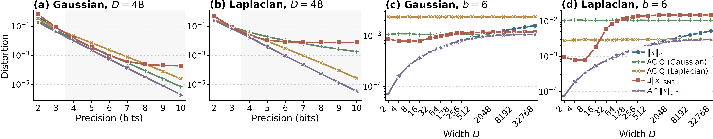
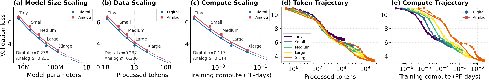

Analog in-memory computing
Making Analog Training Scale
Co-Designing Mapping, Optimizer, and Converters
1 Cornell Tech and Cornell University2 IBM T. J. Watson Research Center3 Sandia National Laboratories
arXiv preprint · September 2026TL;DR
- Keep matrix passes analog, gradient handling digital. Crossbars execute forward and backward matrix operations; digital circuitry forms weight gradients, runs the optimizer, and accumulates updates.
- Co-design the interface. Weight mapping, logical-space optimization, and converter range alignment work together to preserve training fidelity under hardware constraints.
- Evaluate scaling with realistic non-idealities. Preliminary AIHWKit simulations reach approximately 123.6M Transformer parameters, with a loss-scaling exponent close to the digital baseline and a remaining absolute loss gap.
Analog in-memory computing
Matrix multiplication is a central operation in neural networks. In conventional digital hardware, computing it requires moving weights from memory to a processor. Analog in-memory computing (AIMC) stores weights as conductances in non-volatile memory crossbars and performs the multiplication where those weights reside, reducing data movement and offering an energy-efficient way to execute matrix operations.
A crossbar computes through electrical currents: each conductance multiplies an applied input voltage, and currents add along the output lines. Digital-to-analog converters (DACs) encode the inputs, while analog-to-digital converters (ADCs) return the result to digital circuitry. The array supports both the forward matrix pass and the transposed matrix pass used in backpropagation.
Analog matrix–vector multiplication (MVM)
Crossbar computationHover or focus a conductance cell, output column, DAC, or ADC to see how voltages become a matrix–vector product. Click, tap, or press Enter to pin an explanation; Escape clears the pin.
DACs convert inputs to voltages. Each conductance cell multiplies a voltage by a weight, output currents sum along columns, and ADCs digitize the result: y = Ŵx. The backward pass uses the transpose: δin = Ŵᵀδout.
Why analog training is hard
Training requires more than fast matrix multiplication. Each iteration must propagate activations forward, propagate error signals backward, and use weight gradients to update the stored conductances. Small updates must remain effective over thousands of iterations as the weights and signal distributions evolve.
Two hardware constraints make this difficult. DACs and ADCs have finite precision and range, so quantization and clipping can distort the forward and backward signals. Weight programming introduces a second constraint: updates arrive as discrete pulses whose effects depend on the current conductance and can differ between increasing and decreasing directions. Together with read and write noise, these non-idealities perturb the learning signal and the update trajectory.
AIMC hardware non-ideality model
Switch between pulse updates and converter quantization. Compare a pulse sweep or alternating pulses, adjust the device response, and inspect the equations below the plot.
- DAC / ADC quantization maps an input vector onto finite levels.
- Weight updates arrive as finite, potentially asymmetric pulses.
Hardware errors propagate and accumulate across layers during both the forward and backward passes. As models grow in depth and width, these errors can increasingly distort gradients and weight updates, with effects that compound over the training trajectory. This scaling challenge has kept most existing demonstrations of analog training at relatively small model and dataset scales. Scaling therefore requires preserving gradient fidelity while keeping logical weights, physical conductances, and converter ranges compatible. The training-scale landscape below compares these prior demonstrations with this work.
The training-scale landscape
34 study entries · logarithmic axesHover or focus a point to inspect a study. Click or tap to keep its details open.
The central question. How can analog training continue to scale with model and dataset size while preserving convergence under hardware non-idealities?
The mixed-signal architecture
The framework assigns each operation to the domain that best fits its numerical requirements. Analog arrays perform the forward matrix pass and the transpose operation in backpropagation. The precision-sensitive update path stays digital.
Mixed-precision (MP) training architecture
Explore the partitionCompare digital mixed precision, the analog MP baseline, and this work. Hover or focus a component to animate its signal paths; click or press Enter to pin its explanation. Escape clears the pin.
The analog MP baseline executes forward and backward matrix passes in a DAC–crossbar–ADC path, while digital circuitry accumulates gradients and residual updates. This work adds logical-space optimization, width-aware mapping, and converter alignment.
One training step, two domains
y = Wx
Inputs pass through DACs into the conductance array. The crossbar computes the matrix–vector product, and ADCs return a digital output. Mapping and converter range alignment preserve signal fidelity.
This partition follows the established mixed-precision architecture of Nandakumar et al. (2020): analog arrays execute forward and backward matrix passes, while digital circuitry computes and accumulates weight updates. Retaining digital weight-gradient (W-grad) computation, however, incurs dense arithmetic and storage overhead.
In principle, W-grad could instead use the parallel analog rank updates of Gokmen and Vlasov (2016). Activation and error signals drive outer-product updates directly on the crossbar, reducing the update complexity of a \(D\times D\) layer from \(O(D^2)\) to \(O(D)\). Nandakumar et al. point to device-endurance concerns with this approach. We examine the tradeoff from the perspective of scaling: can this computational saving preserve the gradient information needed for stable training as models grow?
Why weight-gradient accumulation should remain digital
We accept the arithmetic and storage cost of digital W-grad for two compounding reasons: gradient reduction is highly sensitive to precision loss, and fragmenting a batch update into frequent quantized transfers repeatedly introduces write-path error. The experiments below trace these mechanisms from signal precision to the realized array update.
W-grad is sensitive to precision loss
First, consider a purely digital Transformer training experiment (panel a). Quantizing weights or activations to FP8 barely changes final validation loss relative to FP16, while the same precision reduction in the gradient path severely impairs convergence. This control quantizes backward error signals and parameter gradients while arithmetic and reductions remain FP32. Gradient fidelity is therefore already critical before analog accumulation or device programming enters the picture.
Cancellation amplifies accumulation error
A weight gradient sums many signed contributions. For one coordinate, \(+10.0\) and \(-9.9\) leave a residual of only \(0.1\): small rounding errors in the large terms can overwhelm the useful update. The cancellation factor \(\kappa=\sum_b|g_b|/|\sum_b g_b|\) measures this imbalance. Its mean is far above one across all six measured Transformer projection types (panel b). Replaying the same contributions with rounding after every addition shows why this matters: relative gradient error grows with cancellation strength, with substantial error even in FP16 and much larger error in FP8 (panel c). Accurate accumulation must preserve the small signed residual throughout the reduction.
Consolidation avoids repeated quantized-transfer error
Digital accumulation also controls how often an update reaches the array. Panel d holds the total batch at 128 on a symmetric finite-state device. Each micro-batch gradient enters a digital residual and immediately requests a quantized full-rank transfer. Smaller micro-batches create more transfer events; each reintroduces pulse-count truncation and capping, update-management effects, and finite-state programming error. These discrepancies accumulate over the fixed batch. Larger micro-batches consolidate more contributions digitally and request fewer transfers, reducing the one-step realized-update error. The direct rank-update result is independent of the micro-batch partition in this test and is shown once.
Why the gradient path needs higher fidelity
Four experiments, one argumentExplore precision sensitivity, cancellation, accumulation error, and fragmented transfers. Select a label to view each experiment; hover, tap, or focus a bar or point for its values.
- Precision sensitivity: FP8 gradient-path representations impair convergence while weights and activations remain tolerant.
- Gradient cancellation: large opposing contributions leave a small signed residual.
- Accumulation error: rounding after each addition increasingly distorts that residual as cancellation grows.
- Transfer fragmentation: consolidating updates digitally reduces repeated quantized-transfer error.


Four-seed means; whiskers and bands show the observed seed min–max range. View all four panels (SVG).

Design principle. Preserve the net gradient digitally and consolidate updates before programming the array. This protects the learning signal while analog forward and backward matrix passes retain their computational advantage.
Three parts of the co-design
Digital accumulation is the starting point. Scaling also requires the logical model, the physical array, and the converters to operate in compatible numerical ranges.
Weight mapping
Logical initialization should shrink with layer width, while the physical weight distribution should be centered on the device’s symmetric point and occupy a fixed fraction of its conductance range. A width-aware scale reconciles these requirements.
To satisfy both, we design \(s\propto D^{-1/2}\):
\(W\) is the logical weight; \(\widehat W\) is the physical conductance and \(\widehat W^\diamond\) its device-specific symmetric point, where potentiation and depression have equal response magnitudes. \(D\) is the layer’s input width; the logical initialization target is \(D^{-1/2}\). The targets above are standard deviations: logical variance scales as \(D^{-1}\), while the physical pre-clipping target \(\tau/\omega\) is independent of width.
Centering the physical weight distribution at \(\widehat W^\diamond\) aligns the device’s symmetric point with logical zero. Near this point, potentiation and depression responses are similar, so update asymmetry is mild and causes less distortion of the intended training updates. For weights farther away, state-dependent asymmetry favors updates toward the symmetric point, creating a restoring tendency toward logical zero. Under noisy updates, this tendency induces an implicit penalty; for approximately linear response asymmetry, it resembles implicit weight decay, with a restoring component proportional to \(-W\) (Wu et al., 2025). Its effective strength depends on the device response and update statistics.
Logical and physical weight distributions
Explore the mapping scaleTune \(\omega\) to change physical occupancy and \(D\) to change the logical initialization. The compensating scale keeps the two targets compatible.
The physical target has standard deviation \(\tau/\omega\), while logical initialization scales as \(D^{-1/2}\). The map uses \(s=\omega D^{-1/2}/\tau\).
Logical-space optimization
A digital optimizer, such as Adam or AdamW, generates the signed logical update \(\Delta W_k\). Keep its moments and preconditioners digital, then use a residual buffer and threshold-triggered pulsing to transfer that update into noisy, discrete physical writes.
Nk = trunc(Hk+½ / (sΔwmin))
Hk+1 = Hk+½ − sNkΔwmin
\(\Delta W_k\) comes from the optimizer, such as Adam. \(H\) stores the untransferred residual in logical units; \(N\) counts signed physical pulses of nominal size \(\Delta w_{\min}\). Truncation is toward zero.
Converter alignment
Apply converter alignment (CA) in both the forward and transposed backward matrix passes: their activations and error signals can have different, evolving distributions. Align converter ranges to balance clipping against quantization error. Let \(C>0\) be the clipping rail for the unscaled input vector \(x\): the quantizer represents values within \([-C,C]\), and values outside this range are clipped to its endpoints.
Consider a \(D\)-dimension vector \(x\) whose elements are sampled from a distribution \(\mathcal V\). The rail optimization problem chooses a norm order \(p\) and multiplier \(A\) in \(C=A\lVert x\rVert_p\) to minimize expected reconstruction error per coordinate:
\(\mathcal V\) is the input distribution, \(D\) is the vector dimension, and \(Q_{K,C}\) is the coordinatewise uniform saturating quantizer with resolution parameter \(K\) and rail \(C\).
Max alignment is an inexpensive approximate solution: choose \((p,A)=(\infty,1)\), giving \(C=\lVert x\rVert_\infty\). This avoids repeated distribution fitting and rail optimization during training; it need not minimize distortion at finite precision.
u = DAC(x/C)
z = (Ŵ − Ŵ⋄)u + ξ
y = sC · ADC(z)
Prescale \(x\) digitally to a fixed DAC range \([-1,1]\), then restore \(sC\) after conversion. \(u\) is the DAC output; \(z\) is the physical crossbar current, including read noise \(\xi\). The physical ADC rail is chosen separately for this current.
Try converter alignment
Input quantizationChoose Gaussian or Laplacian inputs and a vector size, then compare max alignment, Optimal Rail, and ACIQ rails. Paired bars show each original and reconstructed coordinate; the error chart compares all methods on the same vector.
A narrow rail clips large coordinates; a wide rail spreads conversion levels apart. Max alignment sets C to the largest absolute input, eliminating input clipping. With JavaScript enabled, compare paired coordinate bars and method errors on Gaussian or Laplacian vectors of adjustable size.
The rail \(C\) describes the range of the unscaled digital input. Prescaling by \(1/C\) keeps the physical DAC range fixed.
Technical detail: ACIQ formulation and why we use max alignment
Analytical clipping for integer quantization
ACIQ selects a scalar rail under an assumed, centered population density \(f\). Its approximate mean squared error combines clipping beyond \([-C,C]\) with rounding error \(\Delta^2/12\), where \(\Delta=2C/K\):
For Gaussian inputs \(z\sim\mathcal N(0,\sigma^2)\), and Laplace inputs \(z\sim\operatorname{Laplace}(0,b_L)\), the clipping integrals give:
Here \(\sigma\) is the Gaussian standard deviation, \(b_L=\mathbb E|z|\) is the centered Laplace scale, and \(\operatorname{erfc}\) is the complementary error function. Setting the derivative to zero gives \(C=t_G(K)\sigma\) or \(C=t_L(K)b_L\); these resolution-dependent multipliers can be precomputed.
Resolution convention. Original ACIQ uses \(2^b\) bins at \(b\) bits. The playground adapts its rounding term to the displayed endpoint quantizer, with \(K=2^b-1\) intervals, while keeping the same clipping integrals. These formulas are analytical approximations to population error, not the displayed vector’s exact MSE. Authors’ ACIQ formulation.
Why our training architecture uses max alignment
Adapt to changing distributions without choosing a prior. During training, forward activations and backward error signals evolve. A distribution-specific threshold can become suboptimal as its assumed law or scale changes, requiring repeated estimation and recalibration. \(C=\lVert x\rVert_\infty\) adapts directly to each vector with one maximum-absolute-value reduction and avoids input clipping. The concern is maintaining a suitable distribution model during training, rather than recomputing ACIQ’s scalar multiplier.
Approximate the norm–rail optimum with a simple rule. The manuscript optimizes \(C=A\lVert x\rVert_p\) through \(r_K(\mathcal V)\). For fixed dimension \(D\ge2\) and an absolutely continuous input law with finite second moment, it proves that max alignment approaches the best distortion in this family as precision increases:
Check precision and width, not one sample. The manuscript compares calibrated norm–rail policies and fixed Gaussian/Laplace ACIQ thresholds across both precision and dimension. At \(D=48\), max alignment is within 10% of the calibrated distortion from four bits onward for both synthetic product laws; the curves nearly coincide at higher precision. The fixed ACIQ comparators show a remaining gap and sensitivity to the assumed prior.


These results support a low-overhead, distribution-agnostic training policy, without claiming universal finite-bit optimality. At six bits, the 10% criterion holds through \(D=1{,}024\), and the gap opens around \(D=2{,}048\), especially for Laplace inputs. ACIQ can be useful when its prior matches, particularly at low precision. This experiment isolates input quantization; it does not measure end-to-end training accuracy or energy.
Scaling results
The current study evaluates decoder-only Transformers trained from scratch on OpenWebText, from approximately 6.8M to 123.6M parameters. IBM AIHWKit simulations include finite conversion resolution and range, input/output noise, and asymmetric, discrete device programming calibrated to ECRAM measurements.
Explore the scaling figure
Three views · overlaid fitsExplore model size, token trajectories, and compute trajectories, with endpoint fits drawn directly on each plot. Inspect points for exact values; select a model to compare its analog and digital learning curves.


How to read the result. Similar scaling exponents indicate comparable loss improvement with increasing model size over the evaluated range. Analog training still has a persistent validation-loss gap relative to the digital baseline.
Future Work
We believe analog training chips deserve a broader research effort connecting machine learning, optimization, computer architecture, circuits, and device physics. This work explores one way to make analog training scale, but many fundamental questions remain open. Several directions seem especially promising:
A principled approach to analog training
What numerical fidelity does learning actually require? A principled approach would connect hardware noise, finite precision, and imperfect weight updates to optimization and generalization, then use that understanding to guide algorithm and hardware design. Especially useful would be predictions of how these requirements change with model size and training duration, giving hardware designers targets grounded in learning behavior.
Related papers
- Wu et al. (2024). Towards Exact Gradient-based Training on Analog In-memory Computing. Convergence analysis of analog SGD and Tiki-Taka under asymmetric updates.
- Wu et al. (2025). Analog In-memory Training on General Non-ideal Resistive Elements: The Impact of Response Functions. Connects general device response functions to training dynamics and residual learning.
- Onen et al. (2022). Neural Network Training With Asymmetric Crosspoint Elements. Uses coupled dynamical systems to understand and accommodate asymmetric devices.
Learning algorithms designed for analog hardware
Can we design optimizers, model architectures, and training recipes that work naturally with noisy computation and discrete updates? Promising questions include whether we can reduce the precision or storage needed for gradients and optimizer state, and whether alternatives to standard backpropagation offer a better balance of learning quality and hardware cost. Digital gradient handling is our current design choice; finding efficient alternatives remains an open research direction.
Related papers
- Gokmen and Haensch (2020). Algorithm for Training Neural Networks on Resistive Device Arrays. Introduces Tiki-Taka to address asymmetric analog weight updates.
- Gokmen (2021). Enabling Training of Neural Networks on Noisy Hardware. Develops Tiki-Taka v2 for training with noisy, limited-state devices.
- Rasch et al. (2024). Fast and robust analog in-memory deep neural network training. Develops analog update algorithms with improved robustness to reference errors.
- Scellier et al. (2023). Energy-based learning algorithms for analog computing: a comparative study. Compares energy-based alternatives to backpropagation on common models and datasets.
Architecture research beyond a single crossbar
What should a complete analog training computer look like? There is a broad design space in how analog arrays, digital compute, memory, and communication work together. Exploring that space could reveal how to organize many tiles or chips, reuse training data, and place gradient and optimizer computation so that local analog efficiency translates into lower energy and faster training for the whole system.
Related papers
- Nandakumar et al. (2020). Mixed-Precision Deep Learning Based on Computational Memory. Studies analog matrix computation with digital update computation and accumulation.
- Song et al. (2017). PipeLayer: A Pipelined ReRAM-Based Accelerator for Deep Learning. Explores pipelined ReRAM architectures for training and inference.
- Peng et al. (2020 preprint). DNN+NeuroSim V2.0: An End-to-End Benchmarking Framework for Compute-in-Memory Accelerators for On-chip Training. Links training accuracy to estimates of chip area, energy, and throughput.
- Wu et al. (2026 revision). On the Convergence Theory of Pipeline Gradient-based Analog In-memory Training. Analyzes asynchronous pipeline training with analog update imperfections and stale weights.
Devices and circuits guided by learning needs
Which physical improvements would most improve training? Connecting learning experiments to device and circuit design could help prioritize update symmetry, programming resolution, endurance, noise, and conversion cost. A promising goal is to identify which imperfections algorithms can tolerate or compensate for, and which require better hardware, then build and test chips around those requirements.
Related papers
- Gokmen and Vlasov (2016). Acceleration of Deep Neural Network Training with Resistive Cross-Point Devices: Design Considerations. Derives device requirements from neural-network training simulations.
- Onen et al. (2022). Nanosecond protonic programmable resistors for analog deep learning. Demonstrates programmable devices with fast conductance modulation.
- Fuller et al. (2019). Parallel programming of an ionic floating-gate memory array for scalable neuromorphic computing. Demonstrates array-level parallel programming with linear and symmetric updates.
- Ambrogio et al. (2018). Equivalent-accuracy accelerated neural-network training using analogue memory. Combines phase-change memory and capacitors in mixed hardware/software training experiments.
Scaling up and finding useful applications
How far can analog training scale, and where would it be most valuable? Larger models and longer training runs could establish how model quality changes with hardware resources and energy. Fine-tuning, continual learning, and adaptation on edge devices offer complementary questions: can local weight updates make deployed systems more useful under tight power and memory budgets? Shared benchmarks and working chip demonstrations would help turn these possibilities into evidence.
Related papers
- Hoffmann et al. (2022). Training Compute-Optimal Large Language Models. Provides a digital reference for jointly scaling model size and training data.
- Athena et al. (2024). Demonstration of transfer learning using 14 nm technology analog ReRAM array. Investigates transfer learning with an analog ReRAM array.
- Hu et al. (2021 preprint). LoRA: Low-Rank Adaptation of Large Language Models. Provides a digital method for reducing trainable parameters, motivating research on efficient analog adaptation.
Looking ahead. Our architecture-level simulations are one starting point. We welcome work that develops the theory, explores different algorithms and architectures, and brings these ideas into measured hardware. The goal is to understand where analog training can deliver useful learning at a practical cost.
Resources
Making Analog Training Scale: Co-Designing Mapping, Optimizer, and Converters.
arXiv:2609.36584Project repository for the training framework and reproduction materials.
The open-source simulation substrate used in this study.
Our beta fork of AIHWKit, with experimental features that may not yet be incorporated into the official toolkit.
A plug-and-play optimizer package for mixed-precision analog training, supporting modern optimizers such as Adam and Muon.
BibTeX
@misc{wu2026makinganalogtrainingscale,
title = {Making Analog Training Scale: Co-Designing Mapping, Optimizer, and Converters},
author = {Wu, Zhaoxian and Gokmen, Tayfun and Fagbohungbe, Omobayode and Xiao, T. Patrick and Chen, Tianyi},
year = {2026},
eprint = {2609.36584},
archivePrefix = {arXiv},
primaryClass = {cs.LG},
url = {https://arxiv.org/abs/2609.36584}
}